File: 000660.gt.txt (if the image is defective, simply delete all Arabic text and the line will be excluded)
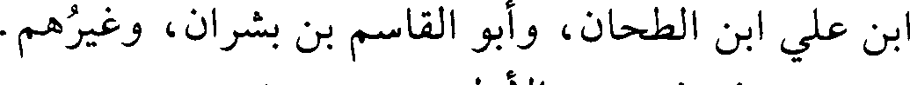
بن علي ابن الطحان، وأبو القاسم بن بشران، وغيرهم.
File: 000661.gt.txt (if the image is defective, simply delete all Arabic text and the line will be excluded)
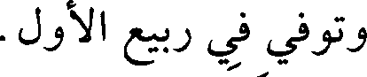
وتوفي في ربيع الأول.
File: 000662.gt.txt (if the image is defective, simply delete all Arabic text and the line will be excluded)
8 - خلف بن محمد بن إسماعيل بن إبراهيم بن نصر البخاري،
File: 000663.gt.txt (if the image is defective, simply delete all Arabic text and the line will be excluded)
أبو صالح الخيام، وهو الذي يخيط الخيم.
File: 000664.gt.txt (if the image is defective, simply delete all Arabic text and the line will be excluded)
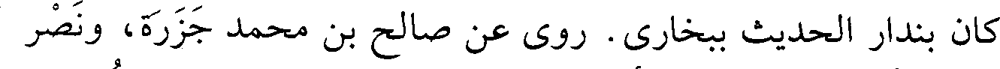
كان بندار الحديث ببخارى. روى عن صالح بن محمد جزرة، ونصر
File: 000665.gt.txt (if the image is defective, simply delete all Arabic text and the line will be excluded)
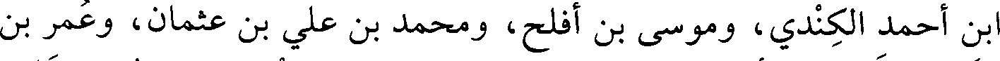
بن أحمد الكندي، وموسى بن أفلح، ومحمد بن علي بن عثمان، وعمر بن
File: 000666.gt.txt (if the image is defective, simply delete all Arabic text and the line will be excluded)
هناد، وفرح بن أيوب، وحامد بن سهل، وطائفة ببخارى، ولم يرحل.
File: 000667.gt.txt (if the image is defective, simply delete all Arabic text and the line will be excluded)
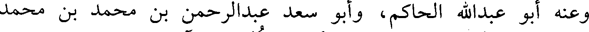
وعنه: أبو عبدالله الحاكم، وأبو سعد عبدالرحمن بن محمد بن محمد
File: 000668.gt.txt (if the image is defective, simply delete all Arabic text and the line will be excluded)
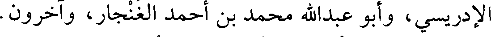
الإدريسي، وأبو عبدالله محمد بن أحمد الغنجار، وآخرون.
File: 000669.gt.txt (if the image is defective, simply delete all Arabic text and the line will be excluded)
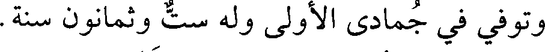
وتوفي في جمادى الأولى وله ست وثمانون سنة.
File: 000670.gt.txt (if the image is defective, simply delete all Arabic text and the line will be excluded)
وقد تكلم فيه أبو سعد الإدريسي ولينه.
File: 000671.gt.txt (if the image is defective, simply delete all Arabic text and the line will be excluded)
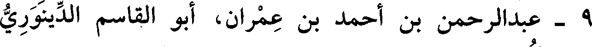
9 - عبدالرحمن بن أحمد بن عمران، أبو القاسم الدينوري
File: 000672.gt.txt (if the image is defective, simply delete all Arabic text and the line will be excluded)
الواعظ، نزيل دمشق.
File: 000673.gt.txt (if the image is defective, simply delete all Arabic text and the line will be excluded)
سكن قرية قينية، وحدث عن عبدالله بن محمد بن وهب الدينوري،
File: 000674.gt.txt (if the image is defective, simply delete all Arabic text and the line will be excluded)
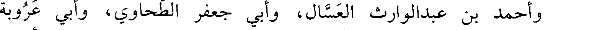
وأحمد بن عبدالوارث العسال، وأبي جعفر الطحاوي، وأبي عروبة
File: 000675.gt.txt (if the image is defective, simply delete all Arabic text and the line will be excluded)
الحراني، وجماعة. وعنه تمام، وعبدالوهاب الميداني، وسعيد بن أحمد
File: 000676.gt.txt (if the image is defective, simply delete all Arabic text and the line will be excluded)
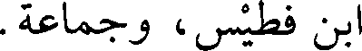
بن فطيس، وجماعة.
File: 000677.gt.txt (if the image is defective, simply delete all Arabic text and the line will be excluded)
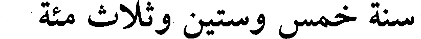
سنة خمس وستين وثلاث مئة
File: 000678.gt.txt (if the image is defective, simply delete all Arabic text and the line will be excluded)
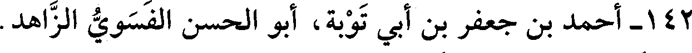
142 - أحمد بن جعفر بن أبي توبة، أبو الحسن الفسوي الزاهد.
File: 000679.gt.txt (if the image is defective, simply delete all Arabic text and the line will be excluded)
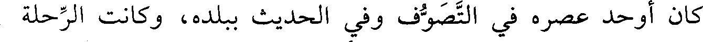
كان أوحد عصره في التصوف وفي الحديث ببلده، وكانت الرحلة
File: 000680.gt.txt (if the image is defective, simply delete all Arabic text and the line will be excluded)
إليه. روى عن علي بن سعيد الرازي، وأحمد بن إبراهيم الربضي، وعلي
File: 000681.gt.txt (if the image is defective, simply delete all Arabic text and the line will be excluded)
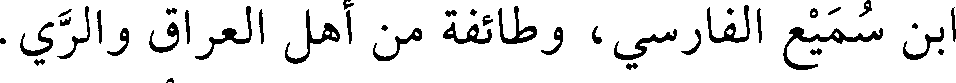
بن سميع الفارسي، وطائفة من أهل العراق والري.
File: 000682.gt.txt (if the image is defective, simply delete all Arabic text and the line will be excluded)
توفي في ذي الحجة. وكان ورده فيما قال ابن السمعاني في
File: 000683.gt.txt (if the image is defective, simply delete all Arabic text and the line will be excluded)
«الأنساب»(1) في اليوم والليلة ألف ركعة، رحمه الله.
File: 000684.gt.txt (if the image is defective, simply delete all Arabic text and the line will be excluded)
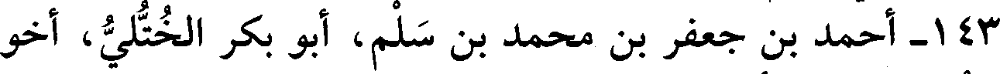
143 - أحمد بن جعفر بن محمد بن سلم، أبو بكر الختلي، أخو
File: 000685.gt.txt (if the image is defective, simply delete all Arabic text and the line will be excluded)
محمد وعمر، وهو الأصغر.
File: 000686.gt.txt (if the image is defective, simply delete all Arabic text and the line will be excluded)
سمع أبا مسلم الكجي، وعبدالله بن أحمد، وإدريس بن عبدالكريم
File: 000687.gt.txt (if the image is defective, simply delete all Arabic text and the line will be excluded)
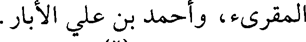
المقرىء، وأحمد بن علي الأبار.
File: 000688.gt.txt (if the image is defective, simply delete all Arabic text and the line will be excluded)
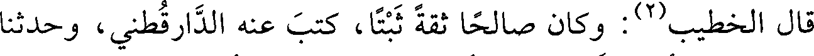
قال الخطيب(2) : وكان صالحا ثقة ثبتا، كتب عنه الدارقطني، وحدثنا
File: 000689.gt.txt (if the image is defective, simply delete all Arabic text and the line will be excluded)
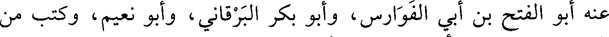
عنه أبو الفتح بن أبي الفوارس، وأبو بكر البرقاني، وأبو نعيم، وكتب من
To Save: `Ctrl+s`, make sure to choose `Webpage, complete`!